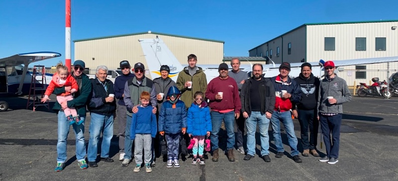
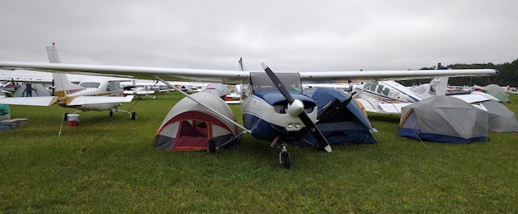
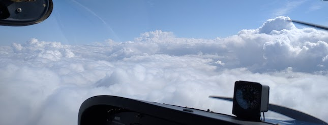

Richmond Pilots is a 503(c)(7) equity based flight club in the NY/NJ area that owns two instrument capable Cessna 172s. The club is a non profit organization, run entirely by its members, and does not provide any commmercial services. Membership is a great alternative to paying FBO prices which are typically twice as much as club rates for the same aircraft. Richmond Pilots has been in continuous operation since its formation in 1968 at Miller Field in Richmond County (Staten Island). When Miller Field closed, the club moved to its current location at Linden Airport in NJ.

Who: Pilots (active and retired), Members, Prospective Members and Guests
When: 2nd Tuesday of the month at 7:30 pm
Where: Panini Grill in Staten Island, NY. Please contact the Chief Pilot for details.
Hourly rates for the aircraft are as following:

We accept all pilots and student pilots. No minimum hours required. We suggest that you come to one of our meetings first (see Meetings) or get in touch via contact info below. You are invited to join any club meeting. When you are ready to join, contact our Chief Pilot.
When ready, fill out the Membership Application
The club has CFI/CFIIs available weekdays and weekends. Additionally, any non-member CFI can be checked out to teach in club aircraft provided the instruction is for members only. The club routinely admits students with no experience at all.

Richmond Pilots
130 W 86th St, Apt 15AR
New York, NY 10024